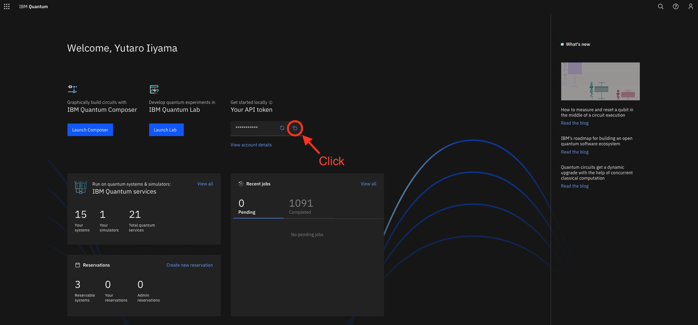
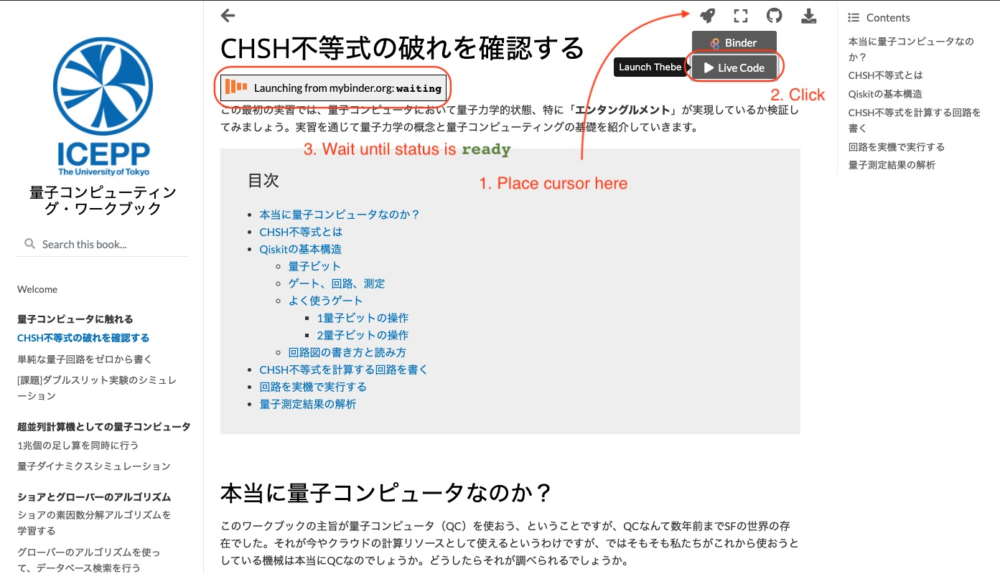

実習の準備¶
目次
予備知識：Python¶
基礎¶
Pythonに関する教材は世の中にいくらでもあるので、基礎的な部分は各自で予習してきてください。具体的には、言語に関しては
forループ
if文
関数の定義
listとdict
オブジェクトとは何か
がわかれば十分です。加えて、numpyというライブラリを多用するので、そちらについても簡単に予習してください。
配列の作り方（
np.array,np.zeros,np.arangeなど）各種演算（
sin,cos,log）などが配列だけでなく通常の数にも使えて、numpyがmathモジュールの代わりにもなること
などがわかれば実習中のコードが理解できるはずです。
Qiskit¶
最初のパッケージQiskitがIBMの提供する量子コンピューティング用のライブラリで、実習は全てこれを利用します。実習中、Qiskitに関して何をしているかわからないときは、質問をするかQiskitのドキュメンテーションを参照してください。
IBM Quantum Experience¶
IBMidを取得し、IBM Quantum Experienceにログインする¶
IBM Q System Oneを利用するには、IBMidというアカウントを作り、サービストークンを取得する必要があります。IBM Quantum ExperienceウェブサイトでIDを取得し、サービスにログインしてください。
ログインしたらホーム画面のYour API tokenという欄からトークンをコピーできます。
{kind=link}
Qiskitにトークンを登録する¶
アカウントごとに発行されるサービストークンは、ユーザー名＋パスワードの代わりとしてPythonプログラム中でIBMQに接続するために使用されます。
from qiskit import IBMQ
IBMQ.enable_account('__paste_your_token_here__')
上のようにenable_accountを利用する場合は、Pythonプログラムを実行するたびに（Jupyter notebookのカーネルを再起動するたびに）認証を行います。
ローカルディスクに書き込める環境にあれば、
IBMQ.save_account('__paste_your_token_here__')
とすることでトークンが保存され、以降はPythonプログラムを実行するたびに行う手続きが
IBMQ.load_account()
に変わります。
ワークブックの使い方¶
インタラクティブHTML¶
このワークブックの各ページにあるプログラムの書かれたセルは、そのままJupyter Notebookのようにブラウザ上で実行することができます。ページの右上のにカーソルを乗せ、現れるメニューから Live Codeをクリックしてください。ページのタイトルの下にステータス表示が現れるので、readyと表示されるまで待ちます。
{kind=link}
ページがインタラクティブになると、コード・セルにrunおよびrestartというボタンが現れ、直下にセルの出力が表示されるようになります。

この状態になったら、入力セルの内容を自由に書き換えて、runボタンをクリックして（もしくはShift + Enterで）Pythonコードを実行することができます。このときいくつか注意すべき点があります。
restartを押すまでページ全体が一つのプログラムになっているので、定義された変数などはセルをまたいで利用される。
しばらく何もしないでページを放置していると、実行サーバーとの接続が切れてしまう。その場合ページを再度読み込んで、改めてインタラクティブコンテンツを起動する必要がある。
コードはmybinder.orgという外部サービス上で実行されるので、個人情報等センシティブな内容の送信は極力避ける。
（通信は暗号化されていて、mybinder.org中ではそれぞれのユーザーのプログラムは独立のコンテナ中で動くので、情報が外に筒抜けということではないはずですが、念の為。）
ただし上で出てきたように、IBM Quantum Experienceのサービストークンだけはどうしても送信する必要があります。
Jupyter Notebook¶
インタラクティブHTMLのセキュリティの問題が気になったり、編集したコードを保存したいと考えたりする場合は、ページの元になったノートブックファイルをダウンロードし、自分のローカルの環境で実行することもできます。右上ののメニューの.ipynbをクリックするか、もしくはのメニューのrepositoryからリンクされているgithubレポジトリをクローンしてください。
ノートブックをローカルに実行するためには、Pythonバージョン3.8以上が必要です。また、pipを使って以下のパッケージをインストールする必要があります。
pip install qiskit matplotlib pylatexenc tabulate